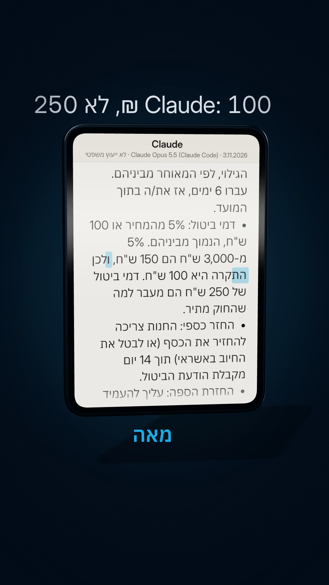
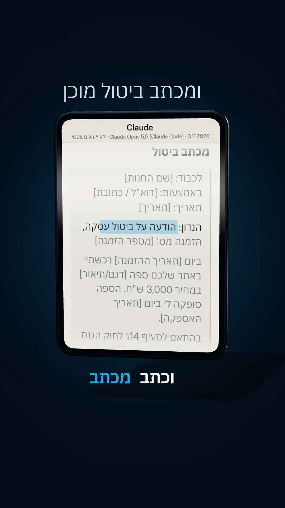

ביטול עסקה
קניתם באינטרנט מחנות ישראלית והתחרטתם? יש 14 יום לבטל. דמי ביטול: 5% מהמחיר או 100 ₪, הנמוך מביניהם. ספה ב-3,000: מקסימום 100. מנורה ב-300: רק 15. מוצר פגום או שונה מההזמנה: 0 ₪.
הנה הפרומפט מהריל. הוא בודק אם אתם עדיין בתוך 14 הימים, מחשב כמה דמי ביטול מותר לחנות לנכות, וכותב לכם מכתב ביטול עם הסעיף בחוק.
איך משתמשים
- מעתיקים את הפרומפט (הכפתור למטה).
- מדביקים ב-Claude או ב-ChatGPT. הרצנו באמת ב-Claude Opus 5.5 וב-Haiku 5.5 (3.11.2026). שניהם הגיעו לאותה תקרה, 100 ₪. בגרסה החינמית הניסוח יכול להיות שונה, אז קראו את התשובה בעין ביקורתית.
- ממלאים את הפרטים במקום הקווים, ושולחים.
הפרומפט
אני רוצה לבטל עסקה שעשיתי באינטרנט או בטלפון בישראל. הפרטים: חנות: ___ | מה קניתי: ___ | מחיר: ___ | תאריך הזמנה: ___ | תאריך שהמוצר הגיע: ___ | התאריך היום: ___ | סיבה: התחרטתי / פגם / לא תאם את ההזמנה 1. תבדוק אם אני עדיין בתוך 14 הימים לפי סעיף 14ג לחוק הגנת הצרכן, ואם המוצר שלי נכנס לאחד החריגים שאי אפשר לבטל. 2. תחשב כמה דמי ביטול מותר לחנות לנכות: 5% מהמחיר או 100 ₪, הנמוך מביניהם. אם המוצר לא תאם את ההזמנה או את מה שהבטיחו לי, אפס. 3. תכתוב מכתב ביטול קצר ומנומס, עם הסעיף, בקשה להחזר כספי ומקום לפרטים שלי. אל תמציא פרטים שלא נתתי. אם חסר משהו, תשאל.
מה Claude ענה על הספה מהריל
קנייה לדוגמה, לא מקרה אמיתי. הורץ ב-Claude Opus 5.5, 3.11.2026, בלי כלים. Haiku 5.5 הגיע לאותו חישוב (100 ₪), אבל כתב רק "14 יום מקבלת המוצר" ולא הזכיר את מסמך הגילוי.
קניתי באתר של חנות ישראלית ספה ב-3,000 ש"ח. היא הגיעה לפני 6 ימים, היא תקינה, ואני רוצה לבטל. החנות אומרת שדמי הביטול 250 ש"ח. מה מותר להם לגבות לפי החוק? ואם מותר לבטל, כתוב מכתב ביטול קצר.
## מה החוק אומר **כן, מותר לך לבטל, והחנות יכולה לגבות לכל היותר 100 ש"ח, לא 250 ש"ח.** לפי סעיף 14ג לחוק הגנת הצרכן ותקנות הגנת הצרכן (ביטול עסקה), התשע"א-2010: - **מועד הביטול:** בעסקת מכר מרחוק (כמו קנייה באתר) אפשר לבטל תוך 14 יום מיום קבלת המוצר, או מיום קבלת מסמך הגילוי, לפי המאוחר מביניהם. עברו 6 ימים, אז את/ה בתוך המועד. - **דמי ביטול:** 5% מהמחיר או 100 ש"ח, הנמוך מביניהם. 5% מ-3,000 ש"ח הם 150 ש"ח, ולכן **התקרה היא 100 ש"ח**. דמי ביטול של 250 ש"ח הם מעבר למה שהחוק מתיר. - **החזר כספי:** החנות צריכה להחזיר את הכסף (או לבטל את החיוב באשראי) תוך 14 יום מקבלת הודעת הביטול. - **החזרת הספה:** עליך להעמיד את הספה לרשות החנות להחזרה. אם החנות אוספת אותה, ייתכן שתבקש לנכות דמי משלוח או איסוף. כדאי לברר מה כתוב בתנאי העסקה ובמסמך הגילוי. **סייגים שכדאי לבדוק:** - אם הספה **הוזמנה במיוחד** לפי מידות, צבע או בד שבחרת, ייתכן שזכות הביטול לא חלה עליה. - אם את/ה **אזרח/ית ותיק/ה, עולה חדש/ה או אדם עם מוגבלות**, ויש שיחה בינך לבין החנות כחלק מהעסקה, תקופת הביטול עשויה להתארך ל-4 חודשים. --- ## מכתב ביטול > **לכבוד:** [שם החנות] > **באמצעות:** [דוא"ל / כתובת] > **תאריך:** [תאריך] > > **הנדון: הודעה על ביטול עסקה, הזמנה מס' [מספר הזמנה]** > > ביום [תאריך ההזמנה] רכשתי באתר שלכם ספה [דגם/תיאור] במחיר 3,000 ש"ח. הספה סופקה לי ביום [תאריך האספקה]. > > בהתאם לסעיף 14ג לחוק הגנת הצרכן, התשמ"א-1981, אני מודיע/ה בזאת על ביטול העסקה. > > הספה תקינה ולא נעשה בה שימוש, והיא עומדת לרשותכם לאיסוף בכתובת [כתובת]. אבקש לתאם מועד איסוף. > > לפי תקנות הגנת הצרכן (ביטול עסקה), התש"ע-2010, דמי הביטול המרביים הם 5% ממחיר העסקה או 100 ש"ח, הנמוך מביניהם, כלומר 100 ש"ח לכל היותר. דמי ביטול של 250 ש"ח, כפי שנמסר לי, אינם עומדים בהוראות הדין. > > אבקש להשיב לי את סכום העסקה, בניכוי דמי ביטול שלא יעלו על 100 ש"ח, תוך 14 יום מקבלת הודעה זו, כקבוע בחוק. > > בכבוד רב, > [שם מלא] > ת"ז: [מספר] > טלפון: [מספר] --- **טיפים:** - שלח/י את ההודעה בכתב, בדוא"ל או בדואר רשום, ושמור/י אישור שליחה. - צלם/י את הספה לפני שהיא נאספת. - אם החנות מסרבת, אפשר לפנות לרשות להגנת הצרכן ולסחר הוגן או להגיש תביעה בבית משפט לתביעות קטנות. *זה מידע כללי ולא ייעוץ משפטי. כדאי לבדוק את תנאי העסקה ואת מסמך הגילוי שקיבלת.*
הערת עריכה: במכתב, Claude כתב "התש״ע-2010". השם הנכון: תקנות הגנת הצרכן (ביטול עסקה), התשע״א-2010 (כמו שהוא עצמו כתב בפסקה שמעל). תקנו לפני ששולחים. 100 ₪ היא התקרה לדמי הביטול בלבד, הובלה חזרה יכולה להיות על חשבונכם.


כדאי לדעת
- 14 הימים נספרים מהיום שקיבלתם את המוצר (או את מסמך פרטי העסקה, המאוחר מביניהם).
- מוצר שלא תאם את ההזמנה: לא משלמים דמי ביטול בכלל.
- בני 65 ומעלה, אנשים עם מוגבלות ועולים חדשים: בתנאים מסוימים יש עד 4 חודשים.
- יש מוצרים שאי אפשר לבטל, למשל מזון ומוצרים מתכלים, מוצר שיוצר במיוחד בשבילכם, מידע דיגיטלי להורדה, ספרים ותקליטורים אחרי שפתחו את האריזה, ולינה, טיסה ובילוי למועד קרוב. ספה שהוזמנה לפי מידה או בד לבחירה יכולה להיות חריג. הפרומפט בודק את זה, אבל תבדקו גם בעצמכם.
- החנות מחזירה את הכסף תוך 14 יום מקבלת הודעת הביטול. ייתכן שתבקש עלות איסוף, בדקו בתנאי העסקה.
- אתרים מחו"ל: החוק הזה לא בהכרח חל.
- שולחים את המכתב לחנות במייל, ושומרים את האישור.
🔒 לא מדביקים בצ'אט מספר כרטיס אשראי או תעודת זהות. מספר הזמנה ותאריך מספיקים.
⚠️ זה מידע כללי ולא ייעוץ משפטי. מקורות: סעיף 14ג לחוק הגנת הצרכן ותקנות הגנת הצרכן (ביטול עסקה), התשע"א-2010. לבדיקה: אתר הרשות להגנת הצרכן ולסחר הוגן ב-gov.il, או הערך "ביטול עסקה שנעשתה באינטרנט או בטלפון" בכל זכות.
כל יום כלי AI חדש שחוסך לכם כסף וזמן ← עקבו ב-@critifly